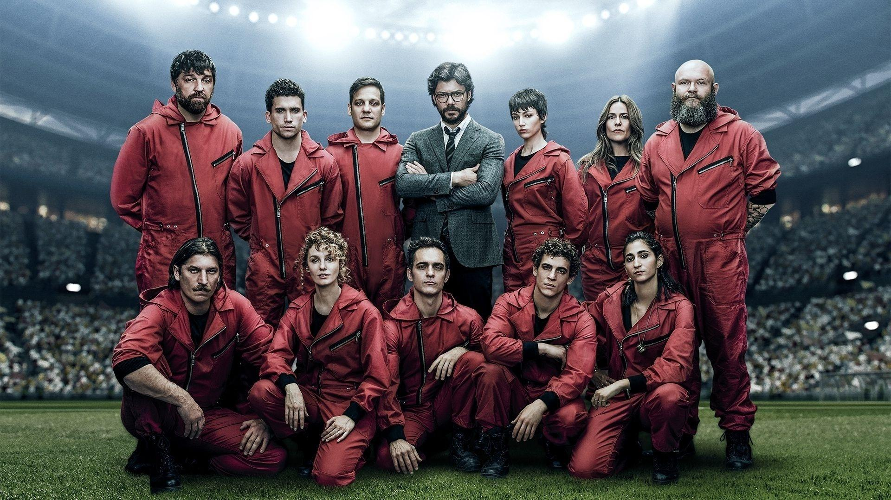
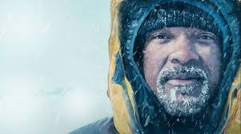

Seja bem vindo
Confira a classificação de séries, segundo os jovens:
1° LUGAR: Sobrenatural
Uma série acompanha os irmãos caçadores Sam e Dean Winchester, que viajam pelos EUA no Impala 67 caçando monstros, demônios, fantasmas e criaturas sobrenaturais.
2° LUGAR: Grey's Anatomy
mostra a vida de médicos do hospital enquanto enfrentam cirurgias difíceis e aprendem a salvar vidas. Ao mesmo tempo, lidam com amores, amizades, perdas e dramas pessoais dentro e fora do hospital.

3° LUGAR: La Casa de Papel
Uma série que segue o Professor e sua equipe de ladrões, com codinomes de cidades, que planejam o roubo perfeito à Casa da Moeda da Espanha, imprimindo bilhões em euros enquanto mantêm reféns.

4° LUGAR: Shadowhunters
Uma série que segue Clary Fray, uma jovem que descobre no seu 18º aniversário ser uma Caçadora de Sombras (híbrida humano-anjo) destinada a caçar demônios.
5° LUGAR: The Last Of Us
Mostra um mundo destruído por uma infecção que transforma pessoas em criaturas perigosas. Joel precisa levar Ellie, que pode ser a chave para a cura, através de um país cheio de perigos.
6° LUGAR: De Polo a Polo
Acompanha Will Smith explorando lugares extremos do planeta com cientistas. A série mistura aventura e descobertas científicas sobre fenômenos naturais da Terra.

7° LUGAR: Os Parças
Acompanha quatro amigos atrapalhados que se metem em confusões enquanto tentam ganhar dinheiro e resolver seus problemas. Entre golpes malucos e situações engraçadas, a amizade deles sempre acaba salvando o dia.